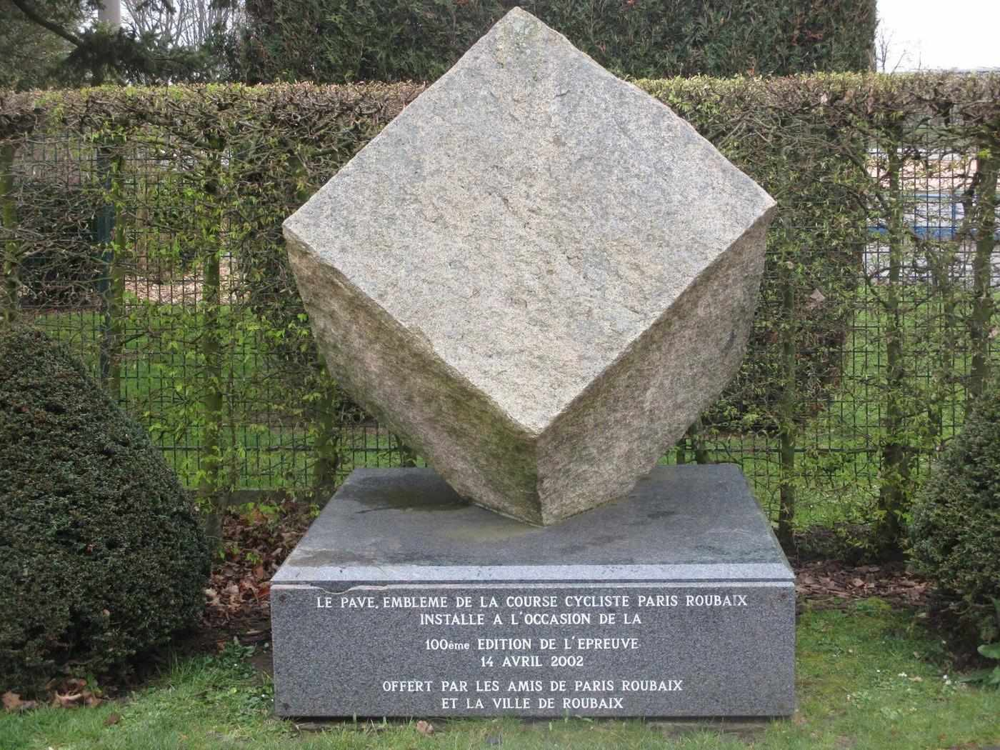

Sports · Other Sports
Paris-Roubaix 2027
- Dates
- Venue
- Velodrome Andre-Petrieux, Roubaix
- Location
- Roubaix, France
- Format
- In-person
- Category
- Other Sports
- Industry
- Cycling
- Organiser
- Amaury Sport Organisation
- Official website
- https://www.paris-roubaix.fr/en
About
Race day is local civil date Sunday 11 April 2027. The record is pinned at the official Roubaix velodrome finish; the race starts in Compiegne.
Topics: Monument, cycling, Paris-Roubaix.
No organiser attendance figure found on the official pages fetched 24 Nov 2026 for this upcoming edition. Ranked by our estimated size tier 'large' (30,000-100,000 attendees/visits), a judgement from format, venue and scale, not an official number.
Sources
- Official — https://www.paris-roubaix.fr/en